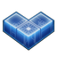
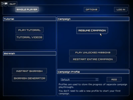
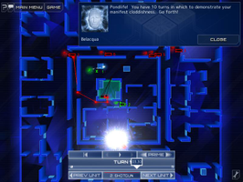
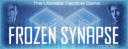

Frozen Synapse
Dieser Artikel wurde für die folgenden Ubuntu-Versionen getestet:
Dieser Artikel ist mit keiner aktuell unterstützten Ubuntu-Version getestet! Bitte diesen Artikel testen und das getestet-Tag entsprechend anpassen.
Zum Verständnis dieses Artikels sind folgende Seiten hilfreich:

Frozen Synapse  ist ein rundenbasierte Strategiespiel. Die Einheiten stehen sich in den zufällig generierten Leveln gegenüber. Spielzüge werden im voraus geplant und von beiden Parteien gleichzeitig ausgeführt. Die Pläne des Gegners müssen daher erahnt und idealerweise durchkreuzt werden, um das Missionsziel zu erreichen... Das Spiel bietet eine 55 Missionen umfassende Einzelspieler-Kampagne und einen Multiplayer-Modus.
ist ein rundenbasierte Strategiespiel. Die Einheiten stehen sich in den zufällig generierten Leveln gegenüber. Spielzüge werden im voraus geplant und von beiden Parteien gleichzeitig ausgeführt. Die Pläne des Gegners müssen daher erahnt und idealerweise durchkreuzt werden, um das Missionsziel zu erreichen... Das Spiel bietet eine 55 Missionen umfassende Einzelspieler-Kampagne und einen Multiplayer-Modus.
|  |  |
| Menü | Spielszene |
Installation¶
Hinweis:
Benutzer eines 64-Bit-Systems sollten die Entwicklung auf der Bug List verfolgen.
Humble Frozen Synapse Bundle¶
Den Installer aus der Aktion Humble Frozen Synapse Bundle ausführbar machen [1] und installieren [2]:
./frozensynapse-linux-32-VERSIONSNUMMER.run
Das Spiel ist anschließend unter "Anwendungen -> Spiele -> Frozen Synapse" zu finden.
Für den Mehrspieler-Modus ist ein Schlüssel erforderlich. Diesen kann man auf der Seite von Humble Bundle finden.
Desura¶
Das Spiel kann über die Internetseite oder den Client zur Spieleliste hinzugefügt und gestartet werden [3].
Offline Record¶
Unter "Game Menu -> Export to Youtube" gibt es die Option "Record Offline". Nach der Aufnahme erscheint die Nachricht "Your video is in the Frozen Synapse directory, titled record.ogv." Die Datei befindet sich unter ~/.local/share/FrozenSynapse. Diese wird auch bei "Record Video for Youtube" überschrieben.
Deinstallation¶
Um das Spiel zu entfernen genügt es das Skript uninstall-frozensynapse.sh im Installationsverzeichnis aufzurufen [2].
Problemnlösungen¶
Tastenkürzel¶
| Tastenkürzel | |
| Taste(n) | Funktion |
 | Einheiten oder Wegpunkte wählen - Befehle erteilen. |
| + | Wegpunkte erstellen. |
 | Befehlsmenü öffnen. |
| + halten | Maus bewegen um die Karte zu scrollen. |
| K / M | Zoomen. |
| Pause | |
Eine gute Übersicht ist im Wiki von error420.com zu finden.

Infobox¶
| Frozen Synapse | |
| Originaltitel: | Frozen Synapse |
| Genre: | Strategie |
| Sprache: | |
| Veröffentlichung: | 2011 |
| Publisher | Mode 7 Games |
| minimale Systemvoraussetzungen: | - |
| Medien: | Download |
| Strichcode / EAN / GTIN: | - |
| Läuft mit: | nativ |

- Erstellt mit Inyoka
-
 2004 – 2017 ubuntuusers.de • Einige Rechte vorbehalten
2004 – 2017 ubuntuusers.de • Einige Rechte vorbehalten
Lizenz • Kontakt • Datenschutz • Impressum • Serverstatus -
Serverhousing gespendet von